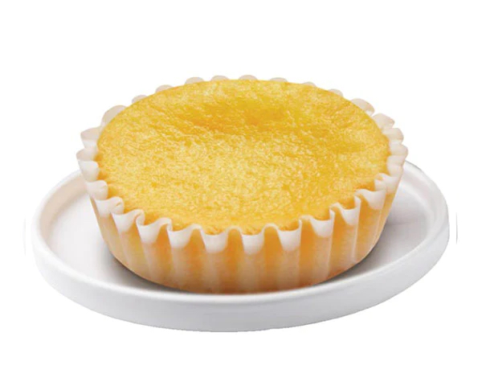
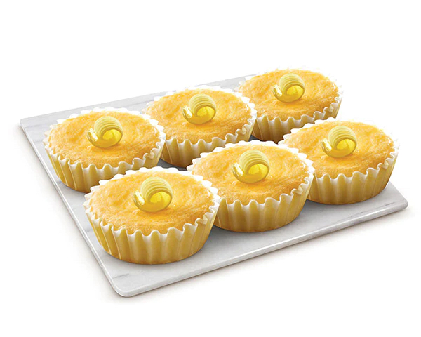

Butter Mamon
Ingredients:
- 100g of cream cheese, softened
- 70g of butter
- 1/2 cup of milk
- 2 tbsp of canola oil
- 7 eggs yolks at room temperature
- 1 cup of cake flour
- 3/4 tsp baking powder
- 7 egg whites at room temperature
- 1 cup of sugar
- 1/4 tsp of lemon juice

Instructions:
- Fill a cooking pot with 3-4 inches of simmering water. Bring the water to a boil, reduce the heat and let it simmer. In a heatproof glass bowl, add the butter, cream cheese, milk, and canola oil. Place the glass bowl on top of the pot of simmering water. It should be a bowl that fits perfectly over the pot. The simmering water should not be touching the bottom of the bowl. If it does, you need to lessen the amount of water. Whisk occasionally until the butter and cream cheese has melted and mixture is smooth. Let this cool.
- Add the egg yolks to the mixture and mix it with a whisk until smooth.
- Sift the flour and baking powder over the egg yolk mixture. Mix until smooth.
- Preheat the oven to 350 F
- Using a stand mixer or a handheld mixer, whisk the egg whites until frothy. Add in the lemon juice and continue whisking until soft peaks form. Gradually add sugar in small amounts until stiff peaks form.
- Gently fold the egg whites into the egg yolk mixture, 1/3 of the egg whites at a time. The final mixture should be uniform in color.
- Spoon the batter into 12 large muffic molds.
- Arrange the cups in a large rimmed baking pan or a roasting pan. Place into the oven. Gently pour water into the roasting pan until the mamon molds are 1/3 submerged at their bottom. Be careful not to pour any water into the cups.
- Bake for 25-30 minutes or until toothpick comes out clean when inserted into the middle of mamon. When done, turn off oven, but leave the mamons inside and let sit for 3 minutes. After 3 minutes, take them out and let cool.

WomanScribbles, Butter Mamon Recipe